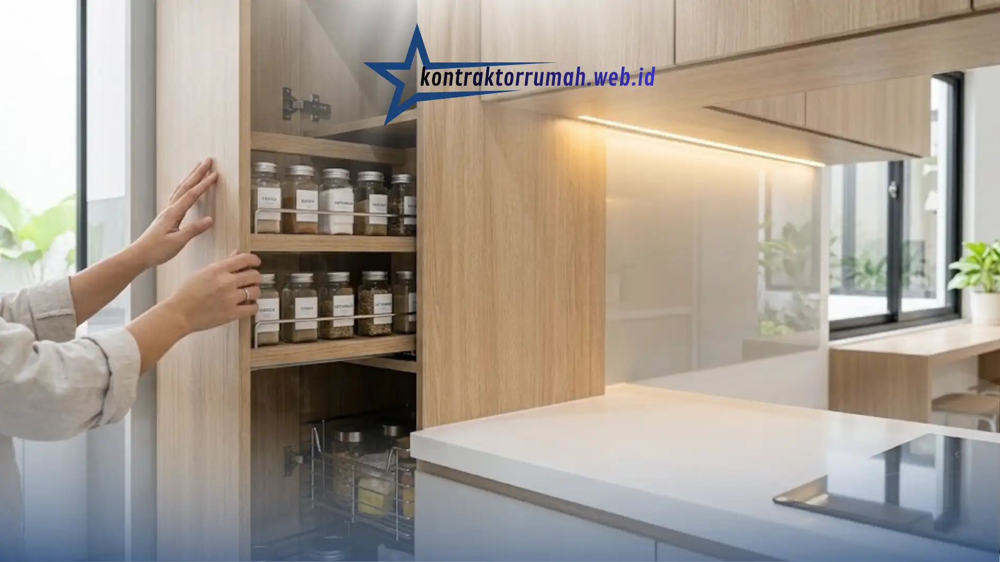

Dapur tidak lagi hanya berfungsi sebagai tempat memasak, melainkan telah bertransformasi menjadi jantung rumah tempat keluarga berkumpul. Memiliki ruang yang bersih dan rapi akan sangat memengaruhi kenyamanan penghuninya.
Poin Penting
- Desain minimalis mengutamakan efisiensi ruang, cocok untuk rumah tipe 36-70 yang umum di perumahan.
- Palet warna netral dan pencahayaan alami maksimal membuat dapur terasa lebih bersih dan lapang.
- Kabinet tertutup dari lantai hingga plafon memaksimalkan penyimpanan tanpa menambah luas lantai.
- Pilih material seperti granit, solid surface, atau HPL yang tahan noda dan mudah dibersihkan.
- Hindari ornamen berlebihan dan pastikan sirkulasi udara/exhaust memadai agar dapur tidak pengap.
Oleh karena itu, mencari inspirasi desain dapur minimalis menjadi langkah awal yang sangat krusial sebelum melakukan renovasi, terutama bagi Anda yang memiliki lahan terbatas namun tetap menginginkan tampilan dapur yang estetis dan fungsional.
Kenapa Desain Dapur Minimalis Semakin Diminati
Tren dapur minimalis berkembang pesat dalam beberapa tahun terakhir, terutama di rumah-rumah perkotaan dengan lahan terbatas. Setidaknya ada tiga alasan utama mengapa konsep ini semakin banyak dipilih:
- Efisiensi ruang. Desain minimalis memaksimalkan setiap sudut dapur agar tetap fungsional tanpa terasa sesak, cocok untuk rumah tipe 36-70 yang umum di perumahan.
- Kemudahan perawatan. Semakin sedikit ornamen dan sudut yang rumit, semakin mudah dapur dibersihkan dari noda minyak dan debu harian.
- Nilai jual properti. Dapur yang tertata rapi dan modern menjadi salah satu nilai tambah saat rumah hendak dijual atau disewakan kembali.
Konsep minimalis mengedepankan fungsionalitas tanpa mengorbankan estetika, seringkali menggunakan palet warna netral seperti putih, abu-abu muda, atau unsur kayu, serta memaksimalkan pencahayaan alami.
Elemen Kunci dalam Desain Dapur Minimalis
Beberapa elemen berikut menjadi ciri khas dapur minimalis yang nyaman dan tetap terlihat estetis:
1. Palet Warna Netral
Warna putih, abu-abu muda, atau unsur kayu natural memberi kesan bersih dan lapang, sekaligus mudah dipadukan dengan gaya interior lain di rumah. Warna netral juga membuat dapur tidak cepat terasa "usang" secara visual meski tidak sering diganti.
2. Pencahayaan Alami Maksimal
Jendela besar atau skylight membantu dapur terasa lebih terang dan hemat energi di siang hari, sekaligus mengurangi kesan sempit pada ruang terbatas. Jika posisi dapur tidak memungkinkan bukaan besar, lampu LED strip di bawah kabinet gantung bisa menjadi alternatif untuk pencahayaan tugas (task lighting) saat memasak.
3. Kabinet Tertutup dari Lantai hingga Plafon
Sistem penyimpanan seperti ini membuat peralatan masak tersembunyi rapi, sehingga dapur selalu terlihat teratur meski sering dipakai. Model kabinet full-height juga memaksimalkan kapasitas simpan tanpa menambah luas lantai yang dibutuhkan.

Kabinet tertutup dari lantai hingga plafon membuat dapur selalu terlihat rapi meski sering dipakai.
4. Material Tahan Lama dan Mudah Dibersihkan
Permukaan seperti granit, solid surface, atau HPL kualitas baik lebih tahan terhadap noda minyak dan air, cocok untuk aktivitas memasak harian. Hindari material berpori seperti marmer alami tanpa lapisan pelindung, karena rentan menyerap noda.
Tips Praktis Menata Dapur Minimalis agar Terasa Lebih Luas
- Gunakan konsep island atau linear sesuai bentuk ruangan — island cocok untuk dapur luas dengan sirkulasi terbuka, sedangkan linear lebih efisien untuk ruang sempit memanjang.
- Terapkan segitiga kerja (kompor-wastafel-kulkas) agar aktivitas memasak lebih efisien dan tidak banyak berjalan bolak-balik.
- Manfaatkan cermin atau backsplash reflektif pada dinding untuk memberi ilusi ruang yang lebih besar.
- Batasi jumlah warna maksimal dua hingga tiga warna dominan agar tampilan tetap konsisten dan tidak ramai.
- Pilih perabotan multifungsi, misalnya meja lipat atau kabinet dengan rak tarik, untuk menghemat ruang gerak.
Kesalahan yang Sebaiknya Dihindari
Banyak pemilik rumah tergoda menambahkan ornamen dekoratif berlebihan yang justru membuat dapur terasa sesak.
Kesalahan lain yang sering terjadi adalah memilih material murah tanpa mempertimbangkan ketahanannya terhadap panas dan kelembapan, sehingga cepat rusak dan justru menambah biaya perawatan di kemudian hari.
Selain itu, banyak yang lupa merencanakan sirkulasi udara dan exhaust yang memadai, padahal dapur minimalis dengan ventilasi buruk akan cepat terasa pengap dan lembap.
Catatan dari tim Kontraktor Rumah: Dengan menerapkan prinsip desain dapur minimalis secara konsisten mulai dari pemilihan warna, pencahayaan, hingga sistem penyimpanan, ruang dapur yang memiliki luasan terbatas pun bisa terasa lebih luas dan lega.
Setelah konsep desain dapur Anda matang, langkah berikutnya adalah menuangkannya ke dalam kontrak kerja yang jelas bersama kontraktor pelaksana agar hasil akhirnya sesuai harapan.
FAQ Seputar Desain Dapur Minimalis
Ingin mewujudkan dapur minimalis idaman sesuai kebutuhan dan bentuk ruang rumah Anda? Konsultasikan konsep desainnya bersama tim kami sekarang.